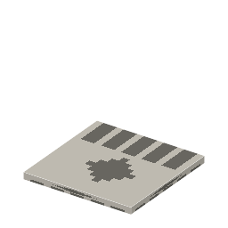

①子ども 光で描いた絵。現存する一番古い写真は、こうして作られた。
②学生 露光しきったヘリオグラフの板をテレビン油で洗うとできる。飾っておける。
③大人 「ヘリオグラフ」はギリシャ語で「太陽で描く」。最古の写真『ル・グラの窓からの眺め』（1826〜27年ごろ）は、ニエプスが自分の家の窓から撮った。
④ガチ 最初の写真と IC の作り方は同じ原理：光で固まる膜を塗り、光を当て、溶かして模様を残す。半導体のリソグラフィー（石版印刷）という名前も、版画の技術から来ている。
（作り方のレシピは無い：拾う・掘る・ほかの方法）
（このアイテムを使うレシピは無い）